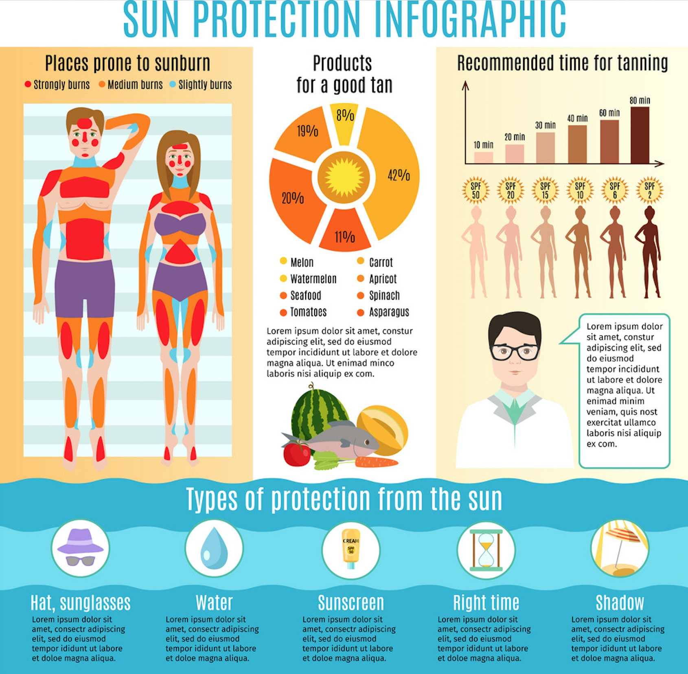

In order to achieve the best protection effect, when the ultraviolet radiation level is 3 or above, we
recommend combining some protection measures:
- Put on some sun-protective clothes - cover the skin as much as possible
- Apply on broad spectrum, waterproof SPF30 + sunscreen. Wear it 20 minutes before you go out, then every
two
hours. Sunscreen should not be used to extend your time in the sun.
- Apply on broad spectrum, waterproof SPF30 + sunscreen. Wear it 20 minutes before you go out, then every
two
hours. Sunscreen should not be used to extend your time in the sun.
- Wear a hat to protect your face, head, neck and ears
- Looking for shadows
- Wear Sunglasses - Make sure they meet Australian standards.
Be extra careful on the day with the highest ultraviolet intensity.
For more real time protection recommendations, please visit our website on prevention.
